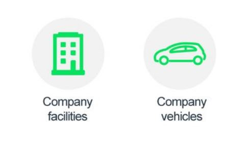
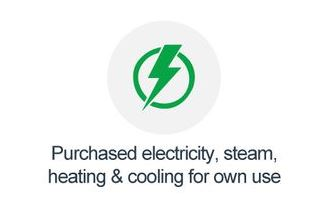
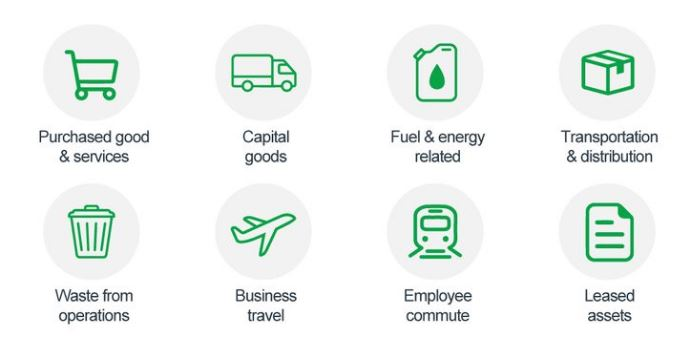
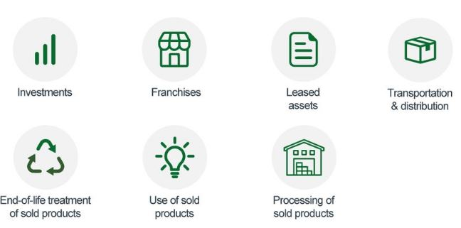
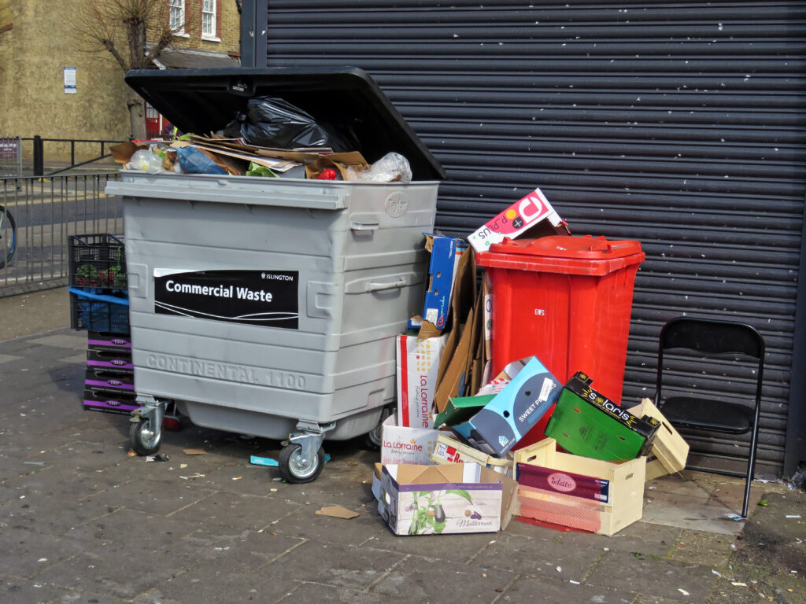
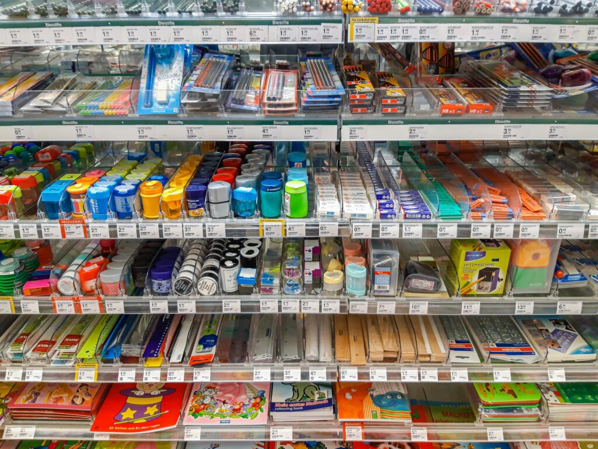
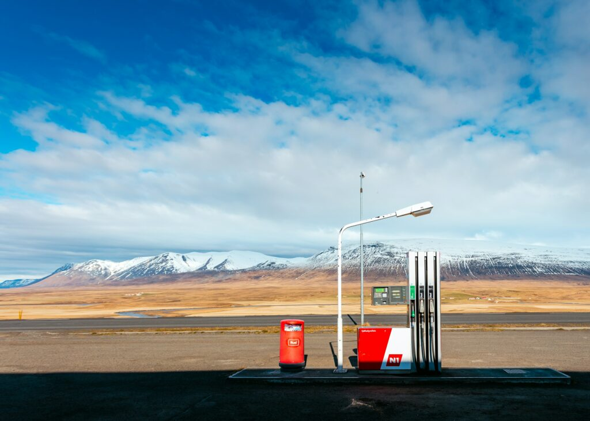
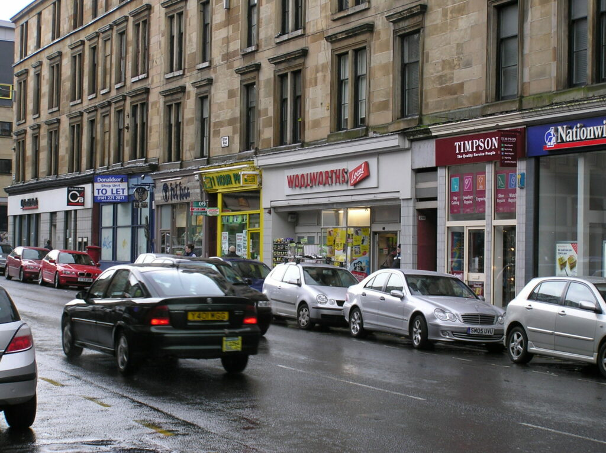
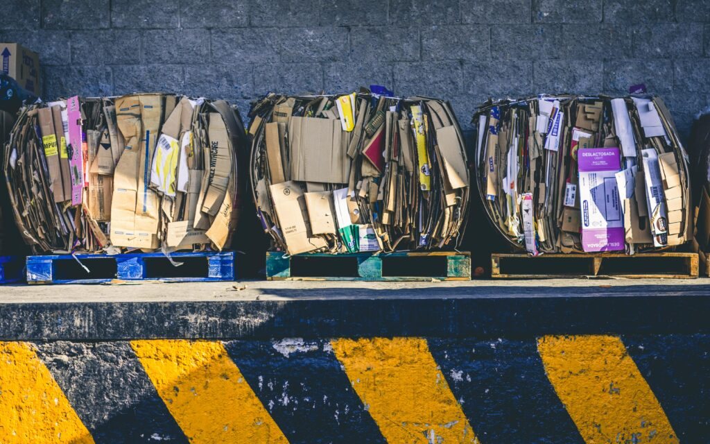

Scope 1 emissions are direct emissions from company-owned and controlled resources. In other words, emissions are released into the atmosphere as a direct result of a set of activities, at a firm level.

All fuels that produce GHG emissions must be included in scope 1. Mobile combustion is when all vehicles are owned or controlled by a firm, burning fuel (e.g. cars, vans, trucks). The increasing use of “electric” vehicles (EVs), means that some of the organization fleets could fall into Scope 2 emissions.
Fugitive emissions are leaks from greenhouse gases (e.g. refrigeration, air conditioning units). It is important to note that refrigerant gases are a thousand times more dangerous than CO2 emissions. On the other hand, process emissions are released during industrial processes, and on-site manufacturing (e.g. production of CO2 during cement manufacturing, factory fumes, chemicals).
Scope 2: Indirect emissions (owned)
Scope 2 emissions are indirect emissions from the generation of purchased energy. In other words, all GHG emissions are released in the atmosphere, from the consumption of purchased electricity, steam, heat and cooling.

For most organizations, electricity will be the unique source of scope 2 emissions. Simply stated, the energy consumed falls into two scopes: Scope 2 covers the electricity consumed by the end-user. Scope 3 covers the energy used by the utilities during transmission and distribution (T&D losses).
Scope 3: Indirect emissions (not owned)
Scope 3 emissions are all indirect emissions that occur in the value chain of the reporting company, including both upstream and downstream emissions.


Emissions are linked to the company's operations. According to GHG protocol, scope 3 emissions are separated into 15 categories which are separated into upstream and downstream activities.
Upstream activities
Upstream activities fall under several categories: for many companies, business travel is one of the most significant to report (e.g. air travel, rail, underground and light rail, taxis, buses and business mileage using private vehicles). Also, employee commuting shall be reported, as it results from the emissions emitted through travel to and from work. It can be decreased through public transportation and home office.

Waste generated in operations relates to waste sent to landfills and wastewater treatments. Waste disposal emits methane (CH4) and nitrous oxide (N2O), which cause greater damage than CO2 emissions.

Purchased goods and services, includes all the upstream emissions from the production of goods and services are purchased by the company in the same year. It is useful to differentiate between purchases of production-related products (e.g, materials, components and parts) and non-production-related products (e.g, office furniture, office supplies and IT support).

Transportation and distribution occur in upstream (suppliers) and downstream (customers) elements of the value chain. It includes emissions from transportation by land, sea and air, as well as emissions relating to third-party warehousing. Fuel and energy-related activities include emissions relating to the production of fuels and energy purchased and consumed by the reporting company, in the reporting year that is not included in scope 1 and 2.
Capital goods are final products that have an extended life and are used by the company to manufacture a product, provide a service or, store, sell and deliver merchandise. Examples of capital goods include buildings, vehicles, machinery. For purposes of accounting for scope 3 emissions, companies should not depreciate, discount, or amortize the emissions from the production of capital goods over time. Instead, companies should account for the total cradle-to-gate emissions of purchased capital goods in the year of acquisition (GHG protocol).
Downstream activities
Investments are included largely for financial institutions, but other organisations can still integrate it into their reporting. According to GHG accounting, investments fall under 4 categories: equity investments, debt investments, project finance, managed investments and client services.

Franchises are businesses operating under a licence to sell or distribute another company’s goods or services within a certain location. Franchises should include emissions, from operations under their control. “Franchises may optionally report upstream scope 3 emissions associated with the franchisor’s operations in category 1."
Leased assets correspond to leased assets by the reporting organisation (upstream) and assets to other organisations (downstream). The calculation method is complex and shall be reported in scope 1 or 2, depending on the nature of the leased asset. Used of sold products is included, concerning "in-use" products that are sold to the consumers. It measures the emissions resulting from product usage, even if it varies considerably. For example, the use of an iPhone will take many years to equal the emissions emitted during production.

At the same time, "end of life treatment" corresponds to products sold to consumers, and is reported similarly as "waste generated during operations". Companies must assess how their products are disposed of, which can be difficult as it usually depends on the consumer. This encourages firms to design recyclable products that limit landfill disposal.